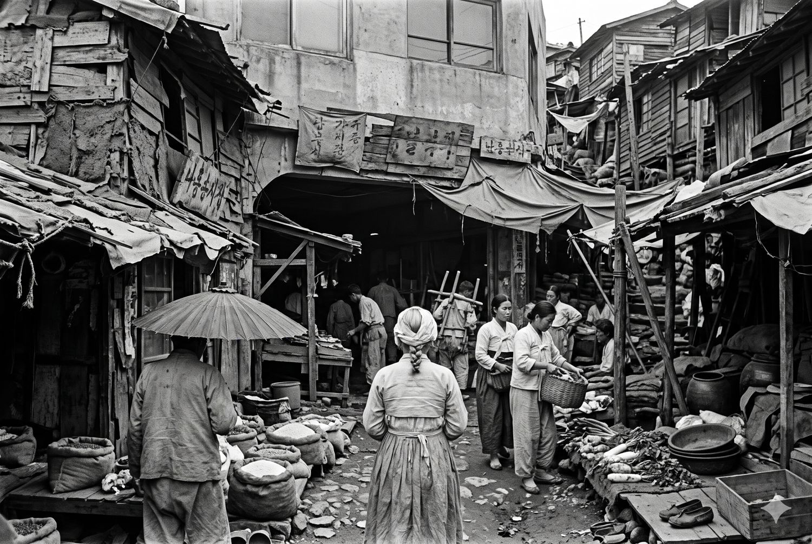
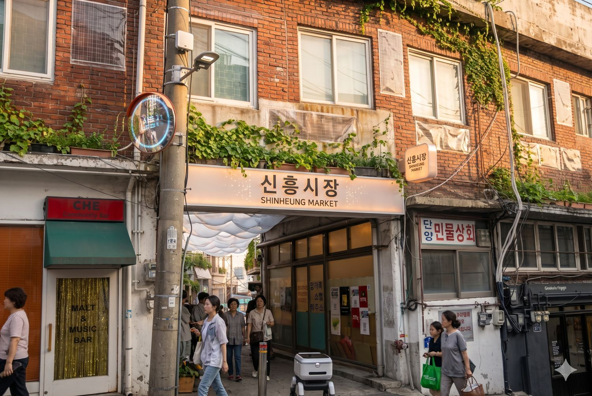

AI 생성 이미지
시간여행 엽서
지금 보고 있는 자리에서 시대를 고르고 한 줄을 적어 보세요. 인스타그램 피드 비율(4:5)로 만들어집니다.
저장한 엽서를 인스타그램에 올릴 때 해방촌 신흥시장 계정을 태그해 주세요.

해방촌 신흥시장 · 1950 — 2056
해방 뒤 실향민이 천막을 친 언덕의 작은 시장. 세 자리에 서서 다섯 시대를 걸어 봅니다.
모든 장면은 AI로 그린 상상이며 실제 기록 사진이 아닙니다.

1950 → 1970 → 1990 → 2026 → 2056
천막에서 니트 골목으로, 슬레이트 지붕에서 구름 지붕으로. 신흥시장은 늘 그 자리에서 다시 태어났습니다.
지금 보고 있는 자리에서 시대를 고르고 한 줄을 적어 보세요. 인스타그램 피드 비율(4:5)로 만들어집니다.
저장한 엽서를 인스타그램에 올릴 때 해방촌 신흥시장 계정을 태그해 주세요.
세 자리에 서서 1950년대부터 2056년까지, 같은 시장이 어떻게 변하는지 봅니다.